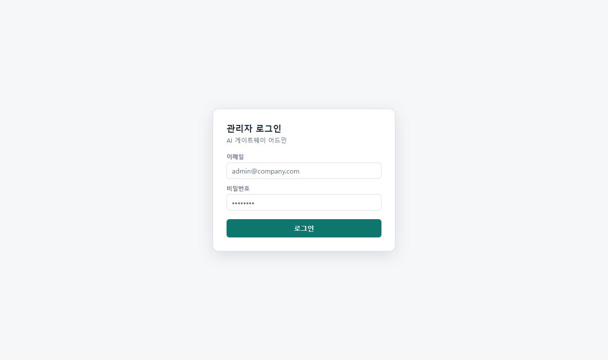
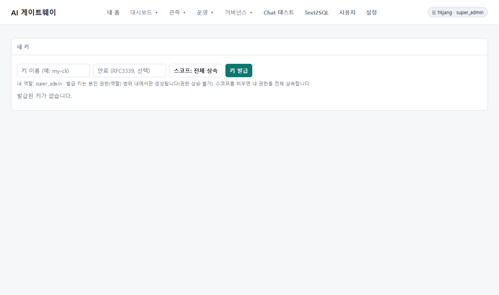

AI Proxy Gateway - Developer 사용 가이드
본 가이드는 AI Proxy Gateway에 접근하는 Developer (개발자) 역할의 사용자가 포털 웹 콘솔을 활용하고, 본인의 API Key를 스스로 발급 및 관리(수명주기 제어)하며, 로컬 개발 도구(IDE)에 연동하는 모든 과정을 실제 서비스 구동 화면 스크린샷과 함께 상세히 설명합니다.
AI Proxy Gateway의 일부 고급 기능과 화면 레이아웃은 최적의 성능 제어 및 기능 확장을 위해 지속적으로 개발 및 개선 중에 있습니다. 이에 따라 실제 콘솔의 특정 UI나 작동 방식이 본 가이드의 내용과 미세하게 다를 수 있음을 사전에 안내해 드립니다.
1. 안전한 포털 로그인 (Secure Portal Login)
AI Proxy Gateway는 강력한 역할 기반 접근 통제(RBAC)를 탑재하고 있어, 개발자가 웹 포털 및 API 기능을 사용하기 위해선 본인 인증을 먼저 거쳐야 합니다.

1.1 로그인 방식 및 단계
- 이메일 및 패스워드 인증:
- 활성화된 본인의 개발자 계정 이메일(예:
your-email@company.com)과 사전에 안전하게 발급받은 개인 비밀번호(보안을 위해 비공개)를 입력창에 각각 타이핑합니다. - 우측 하단의 [로그인] 버튼을 클릭하여 인증을 마칩니다.
- 활성화된 본인의 개발자 계정 이메일(예:
- SSO (Single Sign-On) 로그인 연동:
- 사내 OIDC 연동(Keycloak 등)이 활성화되어 있을 경우, 화면 하단에 "SSO 로그인" 버튼이 함께 제공됩니다. 이를 활용하면 사내 통합 계정을 이용해 비밀번호 입력 없이 한 번에 로그인이 가능합니다.
보안성 극대화 및 사내 통합 자격증명 수명주기 통제를 위해, 포털 로그인 시 가급적 **사내 연동된 SSO Keycloak 로그인 인증 방식**을 활용하여 접근할 것을 강력히 권장합니다. 로컬 직접 계정 로그인은 인프라 장애 등의 비상시에 대비한 대체 통로입니다.
최초 로그인 성공 시, 계정에 기본적으로 developer 역할이 부여되며 개인 맞춤화 대시보드로 자동 연결됩니다.
2. 내 홈: 개인화 대시보드 (My AI Home)
로그인이 성공하면 개발자 전용 맞춤형 랜딩 화면인 "내 홈 (My AI Home)"으로 이동합니다. 개발 업무를 둘러싼 통계, 비용, 보안 정책 차단 이력, 사용 가능한 AI 자산들이 단일 화면에 유기적으로 시각화되어 제공됩니다.

2.1 핵심 구성 요소 및 기능 명세
- 오늘 사용량 KPIs: 오늘 하루 동안 누적된 요청수, 오류수, 평균 성공률을 실시간 제공하며, 이번 달 누적 원화 비용과 라우팅 보정을 통해 아낀 절감 가능 비용을 실시간 계량화하여 보여줍니다.
- 내 프로필 (최근 30일): 나의 평균적인 호출 성공률, 평균 응답 지연 시간(ms), 캐시 적중률(%), Text2SQL 및 MCP 사용 빈도를 분석하고 자연어로 요약 보고합니다.
- 내 사용 패턴 & 자주 쓰는 모델: 내 코딩 트래픽을 분류하여 탑 작업 유형(예: Refactor, Debug 등) 및 많이 쓰는 MCP 도구 통계를 제공하고, 모델별 호출수와 비용을 테이블로 깔끔하게 정리해 줍니다.
- 최근 차단 사유 (Security Firewall): 작업 도중 실수로 Secret(비밀번호, API 키 등)을 코드에 임베딩했거나 위험 구문으로 인해 게이트웨이 보안 방화벽에 걸린 경우, "매칭된 보안 규칙"과 "상세 차단 사유"를 인라인으로 투명하게 노출하여 자가 수정을 유도합니다.
- 내 업무 추천 모델: 최근 작업 통계를 기반으로 개별 추천하는 모델(👍) 및 지양하는 모델(⚠) 정보를 인라인 배지로 안내하며, 팀 전체 멀티모델 평가에서 가장 점수가 높았던 "팀 우승 모델(🏆)" 리더보드를 함께 띄워 선택을 돕습니다.
- 내가 사용 가능한 Skill: 사내에 배포된 공인 AI 프롬프트 지침서(Skill)의 카탈로그입니다. 사용 후 평점 피드백을 주거나, 접근 권한이 없는 스킬에 대해서는 [접근 요청] 결재를 올릴 수 있습니다.
- 최근 요청 / 영수증 (Request Receipt): 내가 호출한 API 상세 내역을 나열하고, [영수증 보기] 버튼을 클릭하면 토큰 상세량(Prompt/Completion/Cached), 지연, 원화 비용 외에도 어떤 이유와 판단으로 해당 LLM 모델이 선택되어 라우팅되었는지(라우팅 이유) 세부 인과관계를 명세합니다.
3. 내 키 발급 및 수명주기 관리 (API Key Self-Service)
개발자가 로컬 IDE(Cursor, VS Code 등)나 파이썬 스크립트에서 AI Gateway를 연동하려면, 전용 Proxy API Key가 필수적입니다. 본 포털은 관리자 승인 대기 없이 스스로 키를 통제할 수 있는 셀프서비스 패널을 지원합니다.

3.1 API Key 수명주기 제어 단계
- 신규 발급 (Create):
- 우측 상단 [새 키 발급] 버튼을 누릅니다.
- 키 이름(예:
cursor-macbook-key)을 입력하고, 필요한 스코프(self,mcp:use등)를 선택한 뒤 발급을 완료합니다. - 주의: 발급된 비밀 시크릿 값(Secret)은 최초 1회만 화면에 표시되며 닫은 후엔 다시는 볼 수 없으므로, 즉시 복사하여 사내 안전한 비밀 저장소에 관리하십시오.
- 스코프 조율 (Scope Edit):
- 보안 상황이나 사용 용도에 따라 키의 권한을 축소/확장하고 싶을 때, 목록의 [스코프] 버튼을 눌러 체크박스로 실시간 조율 및 저장할 수 있습니다.
- 키 회전 (Rotate):
- 사용 중인 키의 유출이 우려되거나 만료 임박 시, [회전] 버튼을 클릭합니다.
- 기존 키와 동일한 권한을 가진 신규 키가 즉시 발급(시크릿 1회 노출)되며, 기존 키는 12시간의 임시 유예기간(Grace Period) 동안 여전히 유효하게 작동하다가 자동 폐기됩니다. 이 유예기간 덕분에 개발자는 로컬 개발 환경의 환경설정을 중단 없이 안전하게 신규 키로 교체할 수 있습니다.
- 즉시 폐기 (Revoke):
- 키를 분실했거나 프로젝트가 만료된 경우 [폐기] 버튼을 누르면, 해당 키는 즉각 무효화 처리되어 영구적으로 차단됩니다.
모든 API Key는 개발자 본인 계정의 통합 사용량 예산 한도(Quota)를 공유하여 차감되므로, 다수의 키를 발급하더라도 통합 한도 내에서 안전하게 비용이 제어됩니다.
4. 핵심 API 호출 가이드 (OpenAI Compatible API)
AI Proxy Gateway는 업계 글로벌 표준 규격인 OpenAI Compatible API 인터페이스 규격을 완벽하게 내장하고 있습니다. 개발자는 별도의 라이브러리 추가 없이 기존에 사용하던 OpenAI SDK나 표준 Curl 클라이언트를 수정 없이 그대로 사용하여 게이트웨이를 구동할 수 있습니다.
4.1 Curl을 활용한 Chat Completion API 호출 예시
터미널 및 스크립팅 환경에서 직사하는 표준 호출 방식입니다. Authorization 헤더에 발급받은 Proxy API Key를 싣고 vibe/auto(지능형 라우팅) 모델을 지정해 호출합니다.
curl https://{gateway-url}/v1/chat/completions \
-H "Content-Type: application/json" \
-H "Authorization: Bearer <YOUR_API_KEY>" \
-d '{
"model": "vibe/auto",
"messages": [
{"role": "user", "content": "AI Proxy Gateway의 핵심 기능 3가지를 요약해 줘."}
],
"temperature": 0.7
}'4.2 Python OpenAI SDK 연동 예시
공식 openai SDK를 완벽히 재활용하며, base_url 및 api_key 두 값만 게이트웨이 정보로 오버라이드하여 연동을 완수합니다.
from openai import OpenAI
# AI Gateway 주소 및 발급 키 연동
client = OpenAI(
base_url="https://{gateway-url}/v1",
api_key="<YOUR_API_KEY>"
)
# vibe/auto를 지정해 지능형 최적 라우팅 수행
response = client.chat.completions.create(
model="vibe/auto",
messages=[
{"role": "user", "content": "안녕하세요! 코드 분석 도구를 기동해 주세요."}
],
temperature=0.2
)
print(response.choices[0].message.content)5. 로컬 환경 및 개발 도구 연동 (IDE & MCP Integration)
AI Proxy Gateway는 터미널 및 외부 IDE 에이전트가 Gateway의 고유 기능들을 도구로 호출할 수 있게 해주는 자체 MCP(Model Context Protocol) Server 규격을 내장하고 있습니다.
5.1 Cursor / Claude Desktop / Roo Code 연동 설정
'내 홈'의 하단 "내 개발도구 연결하기 (MCP)" 카드에서 설정을 복사해 로컬 IDE 환경에 연동합니다.
{
"mcpServers": {
"vibe-gateway": {
"url": "https://{gateway-url}/mcp/gateway",
"headers": {
"Authorization": "Bearer <YOUR_API_KEY>"
}
}
}
}- 위의
<YOUR_API_KEY>부분에 이전 단계에서 발급받은 본인의 Proxy API Key를 삽입하면 즉시 연동이 마무리됩니다. - 연동 시 로컬 AI 에이전트가
gateway_list_models,gateway_estimate_cost,gateway_check_quota,gateway_route_preview등의 7대 자체 지능 도구를 직접 구동할 수 있어, 코딩 도중 언제든 예산이나 최적 모델 조회를 협업 툴로 수행할 수 있습니다.
5.2 연결 진단기 (Connection Doctor)
만약 로컬 클라이언트에서 연동이 원활하게 작동하지 않을 때, 포털의 "연결 진단" 기능을 활용하십시오. 대상 클라이언트(OpenAI SDK, Cursor, Roo Code, Claude Desktop 등)를 선택하고 [연결 진단] 버튼을 클릭하면, 서버가 즉시 인프로세스(in-process) 가상 통신을 흘려보내 인증, 스코프 매핑, 모델 권한, Quota 한도, endpoint 도달성, MCP initialize 프로토콜을 항목별로 1초 만에 자가 검증하고, 문제가 식별될 경우 즉시 구체적인 [조치 가이드]를 화면에 제공해 줍니다.